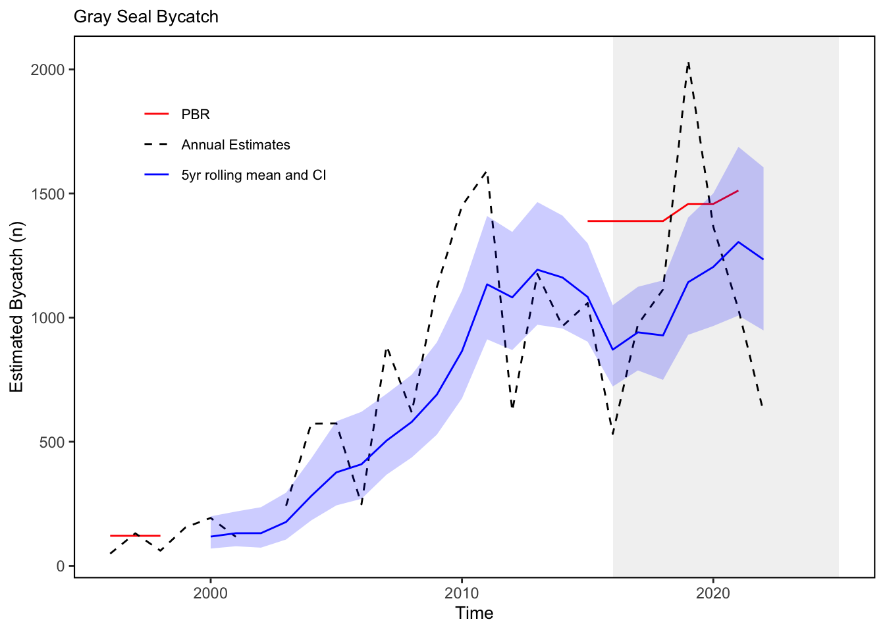

SMART Indicator Report: Gray Seal Bycatch
1 Descriptive Section
1.2 Indicator name
Gray Seal Bycatch
Includes variable(s): pbr, total5yLCI, total5yUCI, totalest1y, totalest5y
1.3 Indicator brief description
The data presented here are time series of the species specific estimates of bycatch from U.S. North Atlantic commercial fisheries.
1.4 Indicator visualization
For gray seals, the total estimated annual bycatch and 5-year rolling mean with 95% confidence intervals from U.S. North Atlantic commercial fisheries is shown by year (Fig. x). Gear types include bottom gillnets, bottom trawls, midwater trawls, and pair trawls. The Potential Biological Removal (PBR) for the US portion of the stock is indicated by the red reference line. The 5-year mean estimates of bycatch increased from 2000 to around 2012, decreased to 2016, and then trended upward between 2016 and 2021 before declining slightly in 2022. While the 5-year mean has remained below the PBR level, and thus meets management objectives, the annual estimate of bycatch exceeded PBR in 2019. Bycatch levels, therefore, may exceed conservation targets in single years due to inter-annual variability.

2 SMART Attribute Section
2.1 Indicator documentation
2.1.1 Are indicators available for others to use (data downloadable)?
Yes
2.1.1.1 Where can indicators be found?
Data: https://noaa-edab.github.io/ecodata/index.html
Description: https://noaa-edab.github.io/catalog/grayseal.html
Technical documentation: https://noaa-edab.github.io/tech-doc/grayseal.html
2.1.1.2 How often are they updated? Are future updates likely?
[need sequential look at datasets for update frequency. Future requires judgement]
2.1.1.3 Who is the contact?
Kimberly Murray (kimberly.murray@noaa.gov); Kristin Precoda (kristin.precoda@noaa.gov)
2.1.2 Gather indicator statistics
2.1.2.1 Units
Indicator | Units |
|---|---|
pbr | no Units field |
total5yLCI | no Units field |
total5yUCI | no Units field |
totalest1y | no Units field |
totalest5y | no Units field |
2.1.2.2 Length of time series, start and end date, periodicity
General overview: Annual from 1990 to 2022.
Indicator specifics:
Indicator | EPU | StartYear | EndYear | NumYears | MissingYears |
|---|---|---|---|---|---|
pbr | All | 1996 | 2021 | 10 | 16 |
total5yLCI | All | 2000 | 2022 | 23 | 0 |
total5yUCI | All | 2000 | 2022 | 23 | 0 |
totalest1y | All | 1996 | 2022 | 26 | 1 |
totalest5y | All | 2000 | 2022 | 23 | 0 |
2.1.2.3 Spatial location, scale and extent
General overview: Spatial scale: US waters from North Carolina to Canada from the U.S. coastline to the U.S. exclusive economic zone 200 nautical miles offshore, thus including all EPUs, the full shelf and beyond.
Indicator specifics:
Indicator | EPU |
|---|---|
pbr | All |
total5yLCI | All |
total5yUCI | All |
totalest1y | All |
totalest5y | All |
2.1.3 Are methods clearly documented to obtain source data and calculate indicators?
Yes
2.1.3.1 Can the indicator be calculated from current documentation?
Annual gillnet bycatch estimates are documented in the CRDs. These feed into the Stock Assessment Reports which report both the annual bycatch estimate and the mean 5-year estimate.
Annual estimates from all fisheries as reported in the CRDs are summed together and the CV of the sum is calculated using the delta method. The 95% confidence intervals are then calculated from the sums and associated CVs, assuming a lognormal distribution. LCI = estimate / exp[qnorm(0.975) * sqrt(log(1+CV2))] UCI = estimate * exp[qnorm(0.975) * sqrt(log(1+CV2))]
2.1.4 Are indicator underlying source data linked or easy to find?
Source data are available in public stock assessment reports.
2.1.4.1 Where are source data stored?
Reported gray seal bycatch estimates and potential biological removal levels can be found in publicly available documents, namely NOAA Fisheries Northeast Fisheries Science Center (NEFSC) Center Reference Documents (CRDs) on the NEFSC publications page and Marine Mammal Protection Stock Assessments respectively. More detailed documentation as to the methods employed can be found in the CRDs.
2.1.4.2 How/by whom are source data updated? Are future updates likely?
Debra Palka debra.palka@noaa.gov
[likelihood of source data updates requires judgement, enter by hand]
2.2 Indicator analysis/testing or history of use
2.2.1 What decision or advice processes are the indicators currently used in?
Gray seals, like all marine mammals, are protected under the Marine Mammal Protection Act (MMPA). The goal of the MMPA is to obtain and maintain optimum sustainable populations (OSP) of marine mammals, because they were recognized as significant functioning elements of marine ecosystems. To help prevent populations from falling below their OSP levels, managers set limits on the level of incidental mortality and serious injury occurring in commercial fisheries, and also monitor unusual mortality events (UMEs). Here we report on levels of gray seal incidental mortality in commercial fisheries over time relative to the limits set on this mortality, otherwise known as the Potential Biological Removal (PBR) level. We also report on the potential for future interactions driven by observed and predicted ecosystem changes in the Northeast US in other areas of this document.
2.2.2 What implications of the indicators are currently listed?
Under the MMPA, if bycatch exceeds PBR levels, Take Reduction Teams may be convened to develop plans to reduce incidental mortality and serious injury from commercial fishing to less than the PBR level. While gray seal bycatch exceeded the PBR level for the US portion of the stock in 2019, the 5-year mean level of bycatch has remained below PBR and the stock is not considered strategic.
2.2.3 Do target, limit, or threshold values already exist for the indicator?
Target, limit, or threshold terms detected
2.2.4 Have the indicators been tested to ensure they respond proportionally to a change in the underlying process?
No
3 SMART rating
Category | Indicator | Element | Attribute | Rating | ElementRating | OverallRating |
|---|---|---|---|---|---|---|
Protected | Gray Seal Bycatch | Specific | Described | 1.0 | 0.6666667 | 0.6833333 |
Protected | Gray Seal Bycatch | Specific | Units | 0.0 | 0.6666667 | 0.6833333 |
Protected | Gray Seal Bycatch | Specific | Spatial | 1.0 | 0.6666667 | 0.6833333 |
Protected | Gray Seal Bycatch | Specific | Uncertainty | 1.0 | 0.6666667 | 0.6833333 |
Protected | Gray Seal Bycatch | Specific | Methods | 1.0 | 0.6666667 | 0.6833333 |
Protected | Gray Seal Bycatch | Specific | Code | 0.0 | 0.6666667 | 0.6833333 |
Protected | Gray Seal Bycatch | Measurable | Available | 1.0 | 1.0000000 | 0.6833333 |
Protected | Gray Seal Bycatch | Measurable | Online | 1.0 | 1.0000000 | 0.6833333 |
Protected | Gray Seal Bycatch | Measurable | Contact | 1.0 | 1.0000000 | 0.6833333 |
Protected | Gray Seal Bycatch | Measurable | SourceDat | 1.0 | 1.0000000 | 0.6833333 |
Protected | Gray Seal Bycatch | Measurable | SourceAvail | 1.0 | 1.0000000 | 0.6833333 |
Protected | Gray Seal Bycatch | Measurable | SourceContact | 1.0 | 1.0000000 | 0.6833333 |
Protected | Gray Seal Bycatch | Achievable | Tested | 0.0 | 0.0000000 | 0.6833333 |
Protected | Gray Seal Bycatch | Achievable | Sensitivity | 0.0 | 0.0000000 | 0.6833333 |
Protected | Gray Seal Bycatch | Achievable | TimeLag | 0.0 | 0.0000000 | 0.6833333 |
Protected | Gray Seal Bycatch | Relevant | Advice | 1.0 | 1.0000000 | 0.6833333 |
Protected | Gray Seal Bycatch | Relevant | Implications | 1.0 | 1.0000000 | 0.6833333 |
Protected | Gray Seal Bycatch | Relevant | TargThresh | 1.0 | 1.0000000 | 0.6833333 |
Protected | Gray Seal Bycatch | Timebound | Frequency | 1.0 | 0.7500000 | 0.6833333 |
Protected | Gray Seal Bycatch | Timebound | Updated | 0.5 | 0.7500000 | 0.6833333 |
3.1 Comments
[Fill below by hand once above data complete]
3.1.1 Additional potential links to management in addition to uses listed above
3.1.2 What additional work would be needed for the Council to use the indicator?
3.1.3 What issues are caused if there is a gap or delay in data underlying the indicator